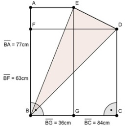

Pythagoras Aufgabe 82 Berechnen Sie den Umfang U des farbigen Dreiecks in cm.

Satz von Pythagoras im Dreieck BCD: BD2 = CD2 + BC2 BD2 = 632 cm2 + 842 cm2 = 11 025 cm2 |√ BD = 105 cm Satz von Pythagoras im Dreieck HDE: ED2 = HE2 + HD2 HE = BA – BF = 77 cm – 63 cm = 14 cm HD = BC – BG = 84 cm – 36 cm = 48 cm ED2 = 142 cm2 + 482 cm2 = 2 500 cm2 |√ ED = 50 cm Satz von Pythagoras im Dreieck BEA: BE2 = AE2 + AB2 BE2 = 362 cm2 + 772 cm2 = 7 225 cm2 |√ BE = 85 cm U = 105 cm + 50 cm + 85 cm = 240 cm